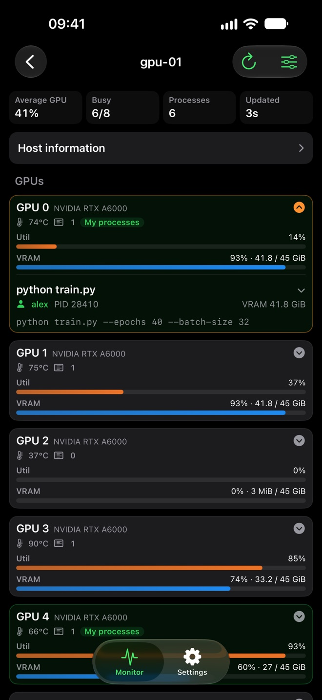
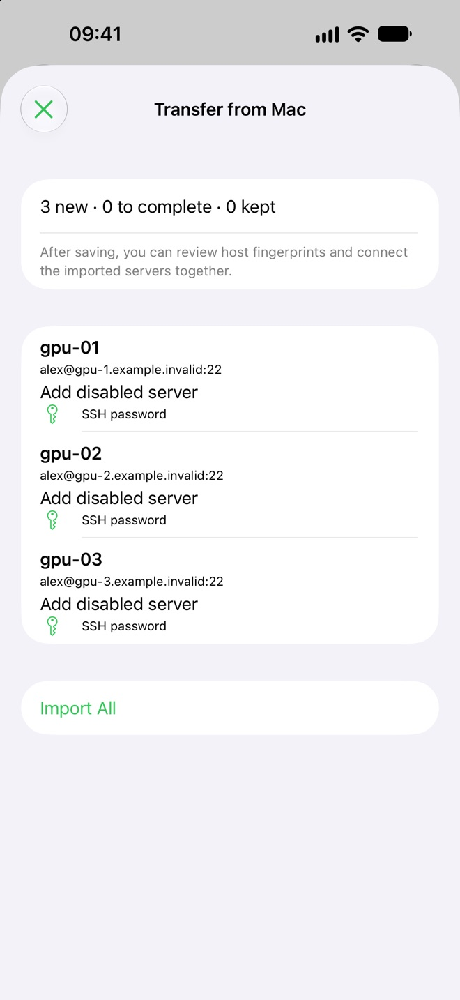

Is the server busy?
Utilization, memory, temperature and process count for every GPU, with a live summary in the menu bar.
nvidia-smi
Free · Open source · Nothing to install on the server
NVBeacon runs nvidia-smi over plain SSH and shows what every GPU is doing:
utilization, memory and who is running what. Right in your Mac menu bar, and on iPhone and iPad.
python train.py --epochs 40 --batch-size 32python finetune.py --lr 2e-5There are no active compute processes reported on this GPU.
torchrun --nproc_per_node 2 pretrain.pypython eval.py --split valThere are no active compute processes reported on this GPU.
python -m ipykernel_launchertorchrun --nproc_per_node 2 pretrain.pypython sweep.py --trial 7There are no active compute processes reported on this GPU.
python train_vit.pypython infer.py --port 8000
How it works
If you can log in to the server and run nvidia-smi, NVBeacon works.
Enter a host, user and port, or import it from ~/.ssh/config on Mac. Use an SSH key or a password.
Each refresh is one SSH command that runs nvidia-smi and reads Linux counters such as /proc/meminfo.
Utilization, memory, temperature and processes appear in the menu bar or on your iPhone, for as many servers as you add.
Features
Utilization, memory, temperature and process count for every GPU, with a live summary in the menu bar.
Every GPU process with its user, PID, GPU memory and full command line. Your own jobs are highlighted.
Decide what counts as busy: running processes, memory use or utilization.
CPU, RAM, swap and network throughput in one collapsible section. Turn off any metric you don't need.
Watch a process and get a notification when it really exits.
Star a GPU and get notified once it has stayed idle long enough for your next run.
Optional per-user GPU history for the last 24 hours, kept only on your Mac.
Keys or passwords, many servers at once, ProxyJump on Mac, and JSON backup and restore of server settings.
Mac and iPhone
The same servers on both, with features that suit each device.
| Feature | Mac | iPhone & iPad |
|---|---|---|
| Where it lives | Menu bar summary and a popover | Overview of all servers; split view on wider screens |
| Refresh | Every 1–300 seconds, in the background | Every 5–300 seconds while the app is open |
| Job alerts | Process exit and idle GPU notifications | — |
| GPU history | Optional, per user, up to 24 hours | — |
| Adding servers | Manually or from ~/.ssh/config | Manually, from a backup, or from your Mac |
| Host keys | Your OpenSSH known_hosts | Fingerprint review before the first login |
Move every server from Mac to iPhone with one QR code. Both screens show the same six digits before anything is sent, and credentials travel only over that encrypted local connection. No cloud sync involved.





Private by design
There is no NVBeacon account, cloud service, advertising or analytics.
nvidia-smi and reads Linux counters such as /proc/meminfo. It installs nothing.Read the iPhone and iPad privacy policy, or check the source code.
Download
Menu bar app with job alerts and optional GPU history.
Download DMGbrew install --cask jaein4722/tap/nvbeacon Every server in your pocket, with split view on iPad.
 Scan with your iPhone camera to open the App Store.
Scan with your iPhone camera to open the App Store.
NVBeacon 1.0 will launch together with NVBeacon for Windows.
On each server you only need SSH access and nvidia-smi.
FAQ
No. NVBeacon connects over SSH, runs nvidia-smi and reads Linux counters such as /proc/meminfo. You only need an account that can log in and run nvidia-smi.
There is no NVBeacon account and no cloud service. Both apps are free, and the source code is on GitHub under the MIT License.
One SSH command per refresh. GPU, CPU, memory and network data share that call, and both apps reuse the SSH connection between refreshes by default. On Mac, a command times out after 15 seconds.
nvidia-smi was not found.Non-interactive SSH shells often have a shorter PATH. In the Mac app, open Settings → Advanced and set the GPU query command for that server to an absolute path such as /usr/bin/nvidia-smi.
On Mac, yes: NVBeacon uses your OpenSSH setup, including ProxyJump in ~/.ssh/config. On iPhone and iPad, connect through a VPN instead.
Not yet. On iPhone and iPad, NVBeacon refreshes while the app is open. Process exit and idle GPU notifications are available in the Mac app.
GPU history is off by default. When you turn it on, the Mac app samples per-user GPU usage at most once a minute per server and keeps it on your Mac for 24 hours.
It is in the works, and NVBeacon 1.0 will be released together with it. Follow the GitHub repository for news.